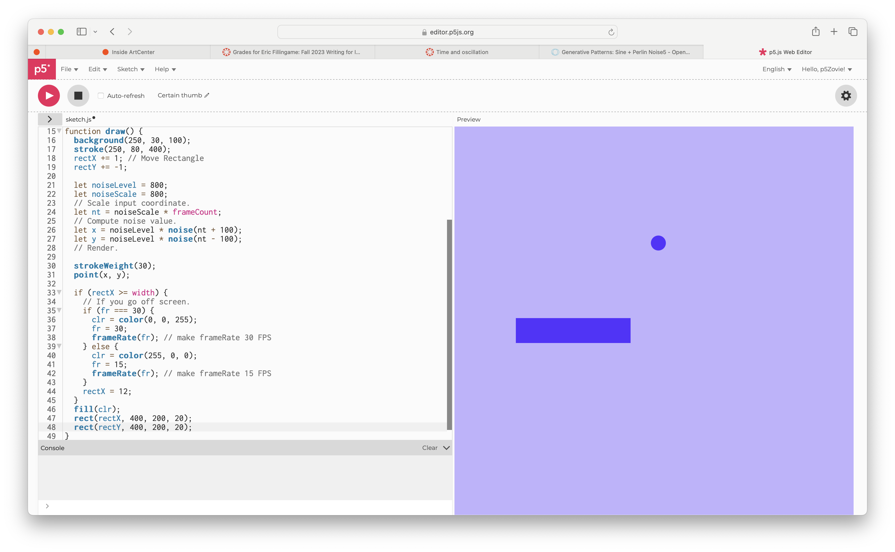
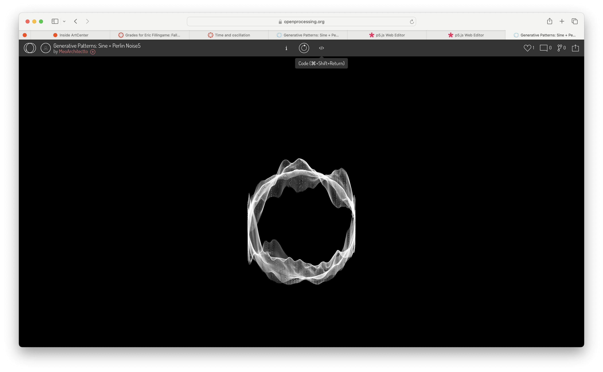
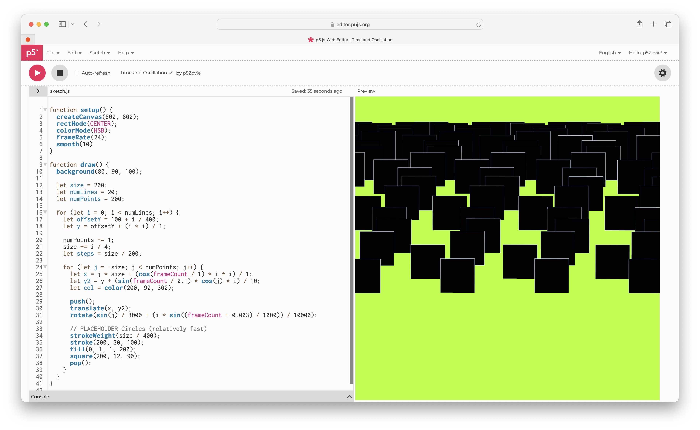

Process
Problems that I Encountered
I attempted to recreate this but had the idea to put a smaller generative circle within the other. However, I could not figure out how to do it... Check it out here! I felt like I might have been moving to fast and took a step back. I played around with time and oscillation last week and this time around tried to further de-syncronize the pattern, shape, and movement of it. I was very confused on how to implement Perlins noise with two shapes.
Link to p5.js Editor Code 
I felt like I might have been moving to fast and took a step back. I played around with time and oscillation last week and this time around tried to further de-syncronize the pattern, shape, and movement of it. I was very confused on how to implement Perlins noise with two shapes. I tried for hours but could not get it to look "organic". Defintely one of the more challenging projects we've had.
